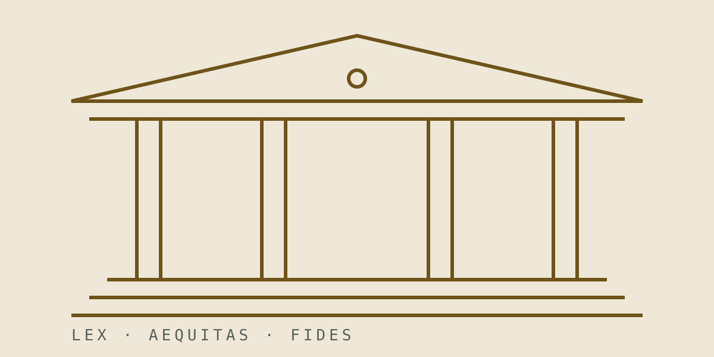

Societario · 28 de octubre de 2026 · 9 min de lectura
Cómo constituir una SAS en Uruguay: pasos, costos y plazos
La Sociedad por Acciones Simplificada es hoy la vía más ágil para formalizar un negocio. Esta guía recorre cada etapa, del contrato social a la inscripción, con costos y plazos orientativos.

Qué es una SAS
La Sociedad por Acciones Simplificada, creada por la Ley N.º 19.820 (2019), es un tipo social pensado para emprender sin fricción: admite un solo socio, permite estatutos a medida y limita la responsabilidad al aporte. A diferencia de la SRL clásica, no exige pluralidad de socios ni escritura pública en todos los casos.
Es la figura que recomendamos por defecto a startups, estudios profesionales que se formalizan y filiales livianas de empresas extranjeras.
Si su negocio tiene un socio, un plan y prisa, la SAS es casi siempre el vehículo correcto.
Requisitos
Antes de iniciar el trámite, reúna lo siguiente:
Documentación de los socios
Cédula de identidad (o pasaporte si es extranjero), domicilio constituido en Uruguay y constancia de CUIT/CUIL o equivalente fiscal del país de origen cuando corresponda.
Definiciones del contrato social
Denominación (con control de homonimia), objeto, capital y su integración, domicilio social, plazo de duración y régimen de administración. El estatuto modelo sirve para empezar, pero un acuerdo de socios a medida evita el 90% de los conflictos que después llegan a nuestro escritorio.
Pasos de constitución
El itinerario habitual, en orden:
1. Reserva de denominación. Se verifica que el nombre esté disponible. 2. Contrato social. Se otorga por documento privado con firmas certificadas o por escritura pública. 3. Inscripción y RUT. Registro ante la Dirección General Impositiva y obtención del RUT. 4. Inscripciones laborales. BPS y MTSS si habrá dependientes. 5. Libros y domicilio fiscal. Rúbrica de libros sociales y fijación del domicilio ante DGI.
Nuestro estudio gestiona las cinco etapas con poder del socio; usted firma una vez y recibe la sociedad operativa.
Costos y plazos orientativos
Un trámite estándar, sin observaciones registrales, se completa en dos a cuatro semanas. Los costos se componen de timbres y tasas, certificaciones notariales, publicaciones cuando corresponden y honorarios profesionales. En la primera consulta le entregamos el presupuesto cerrado por escrito, como manda el código de la casa.
Preguntas frecuentes
¿Puedo constituir la SAS siendo extranjero no residente?
Sí. Necesitará pasaporte vigente y un apoderado o representante con domicilio en el país para las inscripciones.
¿La SAS paga menos impuestos que la SRL?
No por el tipo social en sí: la carga tributaria depende del régimen (IMEBA, IRAE ficto o real) y de la facturación. Lo que la SAS reduce son costos y tiempos de constitución y administración.
Contenido informativo a octubre de 2026. No constituye asesoramiento jurídico para un caso concreto: agende una consulta para un análisis de su situación.